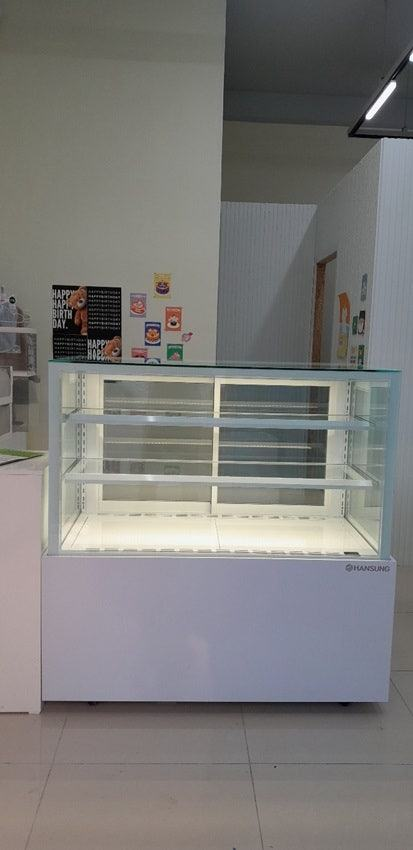

와인(음료)쇼케이스
업소용음료수냉장고 도어, 여닫이·슬라이딩 고르는 기준

업소용음료수냉장고 도어는 앞 통로가 넉넉하면 활짝 열려 꺼내기 편한 여닫이, 통로가 좁으면 문이 앞으로 나오지 않는 슬라이딩이 맞는 경우가 많습니다. 어느 방식이든 패킹이 꼼꼼하게 맞물리고 김서림이 덜한 유리인지가 냉기 유지와 진열 효과를 좌우합니다.
안녕하세요. 음료 매장과 식당에 들어가는 냉장 쇼케이스를 직접 만드는 한성쇼케이스입니다.
음료수냉장고를 고를 때 용량과 크기는 꼼꼼히 보시면서 문 방식은 의외로 대충 넘기시는 사장님이 많습니다.
그런데 막상 설치하고 나면 "문 열 때마다 손님이 비켜야 하네", "문이 무거워서 아이들이 못 여네" 같은 불편이 생깁니다.
음료수냉장고 문은 하루에도 수십 번 열리고 닫히는 부분이라 작은 차이가 매일 쌓입니다. 냉기가 빠지는 양, 유리 김서림, 통로 동선까지 모두 문 방식과 연결돼 있습니다.
오늘은 문 방식별 장단점과 우리 매장에 맞는 선택 기준, 그리고 오래 쓰기 위한 패킹 관리까지 정리해 보겠습니다.
1. 여닫이 도어: 넓게 열리고 꺼내기 편합니다
여닫이문은 문 전체가 활짝 열려 안쪽 상품까지 손이 잘 닿고, 진열하거나 청소할 때도 편합니다. 손님 입장에서도 원하는 음료를 한 번에 집기 쉬워 회전이 빠른 매장에 잘 맞습니다.
다만 문이 열리는 반경만큼 앞 공간이 필요합니다. 통로가 좁은 매장에서는 문을 여는 손님 뒤로 다른 손님이 지나가기 어렵고, 옆 진열대와 부딪히기도 합니다.
문 짝 수를 늘려 한 짝의 폭을 줄이면 열리는 반경이 작아져 이 문제를 줄일 수 있습니다.
- 문 앞 통로 폭이 문 폭보다 넉넉한지 보세요.
- 옆 벽이나 진열대와 문이 부딪히지 않는지 확인하세요.
2. 슬라이딩 도어: 좁은 매장의 해법
슬라이딩 도어는 문이 옆으로 밀리며 열려 앞쪽 공간을 차지하지 않습니다. 협소한 매장이나 테이블 사이에 냉장고를 둬야 하는 식당에서 많이 선택하십니다.
대신 한 번에 열리는 폭이 문 한 짝만큼이라 안쪽 상품을 꺼낼 때 조금 불편할 수 있고, 레일에 이물질이 끼면 문이 뻑뻑해지거나 끝까지 닫히지 않습니다.
슬라이딩 도어는 밀폐력이 결로 관리를 좌우하므로 레일 청소를 습관으로 만들어 두셔야 합니다.
- 레일에 병뚜껑이나 먼지가 끼지 않았는지 자주 보세요.
- 문이 끝까지 닫히는지 마감 때 확인하세요.


3. 앞문과 뒷문, 누가 여는 문인지
손님이 직접 꺼내는 매장이라면 앞문의 손잡이 높이와 문 무게가 중요합니다. 반대로 카운터 안쪽에서 직원이 꺼내 주는 구조라면 뒷문을 두어 손님 동선을 건드리지 않고 보충할 수 있습니다.
앞뒤 양쪽에 문을 두는 구성도 가능합니다. 앞은 손님이 고르는 문, 뒤는 직원이 채우는 문으로 나누면 영업 중 보충이 훨씬 수월해집니다.
주류와 음료를 함께 파는 식당이라면 홀 손님이 직접 꺼내는 셀프 냉장고인지, 직원만 여는 냉장고인지에 따라 손잡이 위치와 잠금 장치 필요 여부도 달라집니다.
이 부분을 상담 때 미리 말씀해 주시면 문 구성을 함께 맞춰 드립니다.
4. 패킹과 유리, 냉기를 지키는 부분
문이 처음처럼 꼭 닫히지 않는다면 대부분 고무패킹 문제입니다. 패킹에 먼지나 음료 끈적임이 묻으면 들뜨면서 틈이 생기고, 그 틈으로 냉기가 빠져 유리 김서림과 전기 사용이 늘어납니다.
또 칸을 너무 꽉 채워 병이 문에 닿으면 문이 끝까지 닫히지 않습니다. 패킹을 젖은 천으로 자주 닦고, 상품은 문 안쪽 선에서 조금 물려 진열하는 습관만으로도 많은 문제가 예방됩니다.
- 패킹에 묻은 이물질을 자주 닦아 주세요.
- 병이 문에 닿지 않게 한 줄 물려 진열하세요.
- 패킹이 갈라졌다면 교체를 요청하세요.
체크리스트
- 문 앞 통로 폭과 문 열림 반경
- 여닫이·슬라이딩 중 매장에 맞는 방식
- 앞문·뒷문 구성 여부
- 슬라이딩 레일 청소
- 고무패킹 밀착 상태
현장에서 자주 보는 경우: 기성 음료수쇼케이스가 공간과 맞지 않을 때
기성 음료수쇼케이스는 사이즈가 일정하고 디자인도 비슷해, 소규모로 시작하시는 매장에서 공간을 제대로 쓰지 못하는 경우가 많습니다.
문 방식 하나 바꾸고 싶어도 정해진 모델 안에서 고를 수밖에 없죠.
저희는 상담을 통해 매장 분위기와 공간에 맞춰 사이즈와 디자인을 정하고 맞춤 제작합니다. 편의점 쇼케이스를 오래 만들어 온 경험을 바탕으로 제작과 납품은 물론, 사용 중 생길 수 있는 문제까지 A/S로 관리해 드립니다.


자주 묻는 질문
업소용음료수냉장고 문 짝 수는 어떻게 정하나요?
설치할 벽 폭과 문 앞 통로 공간을 함께 보고 정합니다. 통로가 좁을수록 한 짝 폭을 줄이고 짝 수를 늘리면 문이 열리는 반경이 작아집니다.
유리문에 김이 자주 서려요. 왜 그런가요?
패킹이 들떠 틈이 생겼거나, 문이 끝까지 닫히지 않는 경우가 많습니다. 패킹 상태와 진열 위치를 먼저 확인하시고, 계속되면 점검을 받아 보세요.
기존 냉장고 문만 바꿀 수도 있나요?
제품 구조와 모델에 따라 다릅니다. 패킹 교체는 비교적 간단하지만 문 방식을 바꾸는 것은 본체 구조와 맞물려 있어, 제품 정보를 보내 주시면 가능 여부를 확인해 드립니다.
매장 조건에 맞춰 만드는 한성쇼케이스
원하시는 제품 사진과 설치할 공간 사진만 보내 주셔도 매장에 맞는 구성을 추천해 드립니다.
- 전국 240여 개 A/S 전담 센터 운영
- 본사 대량 자재 매입으로 품질 대비 합리적인 가격
- 유럽제·삼성 냉각 콤프레셔 적용
- 국내 최초 쇼케이스 전문 디자이너 상주
매장 폭과 원하는 진열 구성을 알려 주세요. 실측과 견적을 안내해 드립니다.
031-986-2458